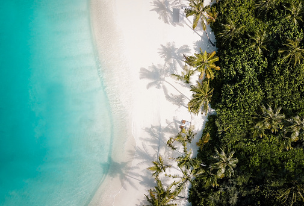
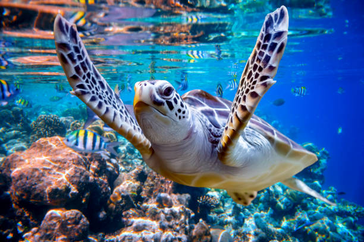
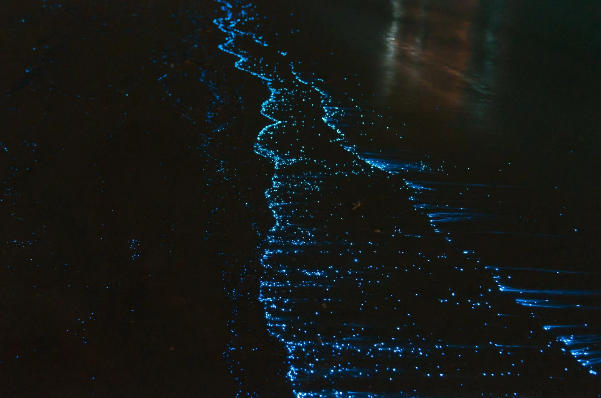

Maldives holds the title of the
lowest(1.5m) & flattest(2.4m)
country in the world.

The white sandy beaches in Maldives
are made up of Carolline,
a very rare type of
sand that constitutes
just 5% of beaches in the world.

You can spot 5 of the 7 species of
marine turtles in the world
such as Hawksbill, Olive Ridley, Loggerhead,
& the green turtle.

Witness the sea of stars
at the bioluminescent lit beaches
of Vaadho Island.